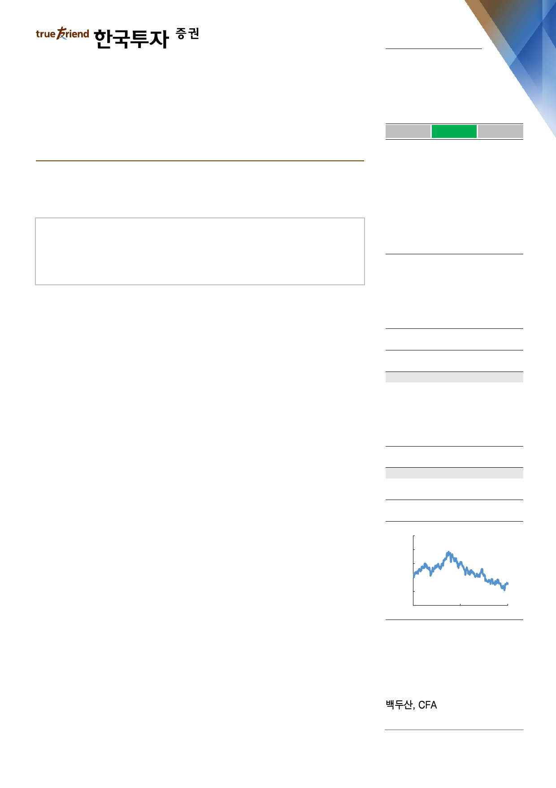

실적 Review
2019. 4. 25
KB금융(105560)
하 회
부 합
순이익의 컨센서스 대비를 의미
상 회
생각보다 이른 정상화
순이익은 8,457억원으로 컨센서스 부합
증권, 손보를 포함한 전반적인 비이자이익 회복
NIM과 건전성은 안정적
Facts : 순이익은 컨센서스 부합. 경상이익 회복
1분기 지배순이익은 8,457억원으로 우리 추정치와 컨센서스에 부합했다. 일회성
판관비를 제외한 경상 순이익은 약 9,500억원으로 작년 1~3분기 수준을 다시 회
복했다. 우선 은행 원화대출금은 전분기대비 0.3% 증가하는데 그쳤다. 전세자금대
출과 일반 중소기업대출이 견조하게 증가했지만 그 외 대출 부문들이 리스크관리
강화와 수요감소 등으로 부진했기 때문이다. 반면 은행 NIM은 예대율 하락에도
불구하고 자산 리프라이싱 효과가 반영되면서 전분기대비 1bp 개선됐다. 그룹 순
이자이익은 일수효과 368억원과 증권 채권평잔 감소 등으로 전분기대비 2.6% 감
소했으나 다음 분기 바로 정상화될 것이다.
Pros & cons : 안정적인 건전성과 회복된 증권, 손보
그룹 대손율은 0.21%로 낮은 수준을 유지했다. 연체율은 소폭 상승했지만 기업과
가계 부문 모두 지난 수년간의 여신 리스크관리 강화 기조로 인해 건전성이 안정
적으로 유지되는 중이다. 수수료이익은 5,506억원으로 전분기대비 11% 증가했다.
신용카드 수수료 감소에도 불구하고, 신탁이익과 IB 관련 수수료가 견조하게 증가
했다. 한편 기타영업손익은 621억원으로 전분기 3,308억원 손실에서 크게 반등했
는데 손보 보험손익, 증권 및 은행의 유가증권 운용 관련익이 모두 정상화된 덕분
이다. 이에 따라 증권, 손보의 1분기 순이익은 각각 809억원, 753억원으로 생각보
다는 빠르게 정상화됨에 따라 그룹 전체 경상 순이익 턴어라운드에 크게 기여했다.
이익경비율은 희망퇴직 비용과 계절성인 인건비성 항목 지출, 감가상각비 증가로
인해 53%로 다소 높았지만 2분기에 50% 수준으로 다시 정상화될 것이다.
Action : 목표주가 67,000원 유지
매수의견과 목표주가 67,000원을 유지한다. 비록 1분기 순이익은 일회성 비용으
로 인해 다소 저조했지만, 은행 본업이 안정적으로 유지되는 가운데 증권과 손보
가 이른 시일 내 턴어라운드하면서 경상 순이익이 9,500억원 수준으로 복귀한 점
은 긍정적이다. 2분기 이후로도 건전성은 안정적으로 유지되면서 완만한 실적 개
선세는 지속될 것이다.
매수(유지)
목표주가: 67,000원(유지)
Stock Data
KOSPI(4/24)
주가(4/24)
시가총액(십억원)
발행주식수(백만)
52주 최고/최저가(원)
일평균거래대금(6개월, 백만원)
유동주식비율/외국인지분율(%)
주요주주(%) 국민연금
2,201
45,350
18,961
418
61,300/40,750
61,847
83.7/67.1
9.5
Valuation 지표
PER(x)
PBR(x)
ROE(%)
DY(%)
EPS(원)
BPS(원)
2018A
6.0
0.52
9.0
4.1
7,739
90,264
2019F
5.3
0.46
9.3
4.9
8,488
98,304
2020F
5.3
0.43
8.8
5.1
8,605
104,709
주가상승률
절대주가(%)
KOSPI 대비(%p)
1개월
6.7
6.1
6개월
(13.0)
(17.9)
12개월
(26.0)
(15.3)
주가추이
(원)
80,000
70,000
60,000
50,000
40,000
30,000
Apr-17
자료: FnGuide
Apr-18
Apr-19
doosan@truefriend.com